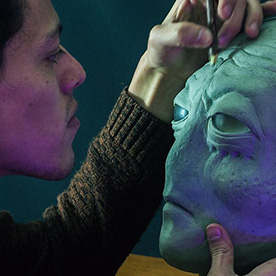
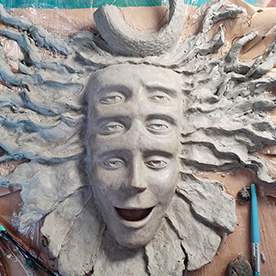
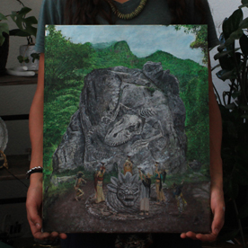

Special effects
I always wanted to work in the performing arts, film, theater, television, and this is how I can be involved in the most fun job in the world.
See work
I always wanted to work in the performing arts, film, theater, television, and this is how I can be involved in the most fun job in the world.
See work
A process of evoking life in matter, as if the material wanted to express itself or leave a trace that it has a soul through my hands.
See work
A glimpse of what I dream or imagine, a utopia where nothing can harm you because you are the one creating it.
See workJerry Garrido is a self-taught visual artist, special effects designer, and makeup artist with over a decade of experience creating practical effects, character designs, sculptures, props, and makeup for film, television, and theater. Born in the State of Mexico in 1990, his professional career has taken him across the worlds of independent cinema, theater, museums, advertising, and cultural projects, where he has specialized in characterization, practical effects, sculpture, prop making, and the creative use of materials. Beyond his professional work in entertainment, Jerry explores different forms of artistic expression, including painting, sculpture, music, and visual experimentation, always driven by a curiosity to learn, create, and transform ideas into tangible forms.
Driven by a fascination with folklore, world cultures, and the transformation of the ordinary into the fantastical, Jerry combines traditional craftsmanship with design and 3D techniques to bring imaginative concepts to life. He has also worked as an educator in character design, special effects makeup, and characterization, sharing his knowledge and creative approach with others. Throughout his career, he has collaborated on a variety of creative and cultural projects, developing a versatile practice that bridges art, design, craftsmanship, and entertainment. His experience as both an artist and educator reflects his passion for experimentation, innovation, and continuous learning, always seeking new ways to explore the boundaries between reality and fantasy.